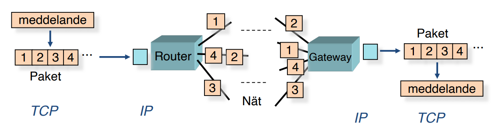
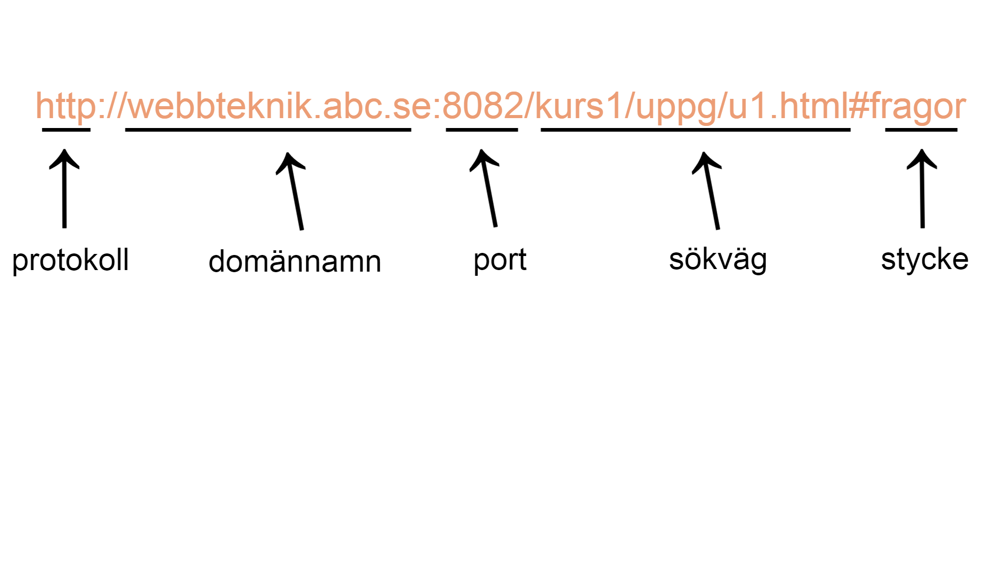

En klient är en dator/webbläsare etc som ansluter till en server för att få tillgång till information/resurser tjänster. Servern är sedan den del som ser till att datorn får tillgång till den information/resurs/tjänst som den efterfrågat.
Klienten är med andra ord beroende av servern för att kunna använda det som efterfrågats Klienten påbörjar kommunikation med servern som svarar. Sedan efterfrågar klienten det som den vill få tillgång till (information, en resurs, en tjänst etc) och servern svarar genom att antingen ge tillgång till det som klienten efterfrågat eller inte. Om servern inte ger tillgång till klienten kan det bero på att just den servern inte tillhandahåller det som klienten efterfrågat eller att det ligger låst bakom en brandvägg.
TCP (Transmission Control Protocol) och IP (Internet Protocol) är två separata dataprotokoll som hanterar olika delar när det handlar om att paketera och skicka information på internet. TCP paketerar informationen så att den på ett smidigt sätt sedan kan skickas till rätt plats. IP hanterar sedan vart informationen ska skickas, till vilken IP-adress den ska skickas. Varje dator (pc, modern kyl/frys, bil, etc) har en specifik IP-adress så att efterfrågad information skickas till rätt ställe.
Den första delen i URL:en är protokollet som visar att Hypertext Transfer Protocol används för att kommunikation mellan webbläsaren och webbservern. Den andra delen är domänen, det vill säga adressen till webbservern som ska kontaktas. Den tredje delen är porten. Porten definierar vilken tjänst som begärs på webbservern vilket i detta fall är 8082. Den fjärde delen är sökvägen vilket definierar den plats på webbsidan/webbservern som efterfrågas. I detta fall har u1.html efterfrågats och den hittades genom att gå genom "kurs1" till "uppg" och till sist nås "u1.html". Den femte och sista delen av URL:en är stycket/ankaret. Ett stycke är en specifik sektion på en webbsida som man då kan referera till i en URL för att komma dit direkt. Man kan se det lite som att man direkt hoppar till ett specifikt stycke i en bok.
